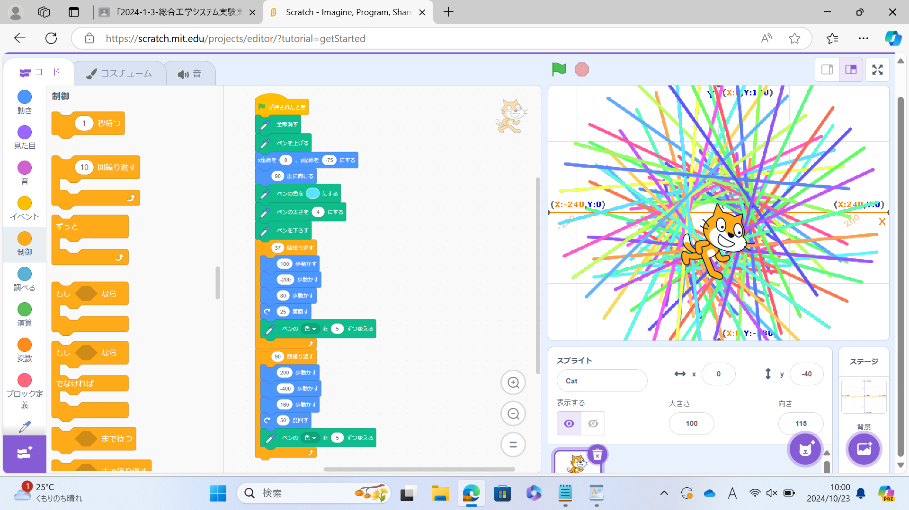

1-1 サイエンスアート

1.内容
スクラッチを使って線を書くプログラムを作成した。最初に線を消しペンを上げて盤面を綺麗にする。そしてcat（スプライト）の座標を（0,-75）にする。次にペンの色を水色にし、ペンの太さを4にしてペンを下ろす。スプライトを100歩動かし、－200歩動かし、また100歩動かし、25度回転させる。これを37回繰り返す。さらに200歩動かし、－400歩動かし、また200歩動かし、50度回転させるこれを90回繰り返して幾何学的な絵を描いた。
2.感想
高専入学前に体験したものだったので比較的簡単にプログラムすることができた。オリジナルのプログラムを作るのは難しかったけど、少し数値を変えるだけでできる絵が全然違っていたので少しずつ調整するのは楽しかった。